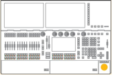
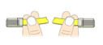
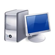

This topic describes how to connect a computer and a grandMA2 console. If you want to create a session between the MA 3D and the grandMA2 console, you need a hardware connection.
Requirement: Network cable or switch.
Connect the console and the computer with a network cable or switch, refer to Console Backpanel.
grandMA2 Console:

Network Cable or Switch:

Computer:

The grandMA2 console and the computer are connected.